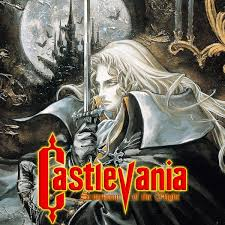
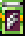
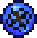
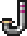
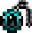
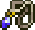
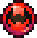
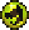

Symphony of the Night

Symphony of the Night
Castlevania: Symphony of the Night é um jogo clássico lançado em 1997 pela Konami, famoso por revolucionar o gênero de ação e exploração, combinando elementos de RPG com plataformas, criando o estilo "Metroidvania". No papel de Alucard, filho de Drácula, os jogadores exploram um vasto castelo cheio de segredos e inimigos, com gráficos sombrios e uma trilha sonora marcante. Considerado um marco na história dos videogames, o jogo continua a influenciar o design de títulos modernos.
Magias Presentes No Jogo
| IMG | NOME | MAGIA |
|---|---|---|
|  | Diario Da Fada | Mostra o nome dos inimigos que Alucard ataca |
|  | Forma Da Névoa | Permite que Alucard se transforme em névoa |
|  | Simbolo Sagrado | Permite a Alucard respirar debaixo d'água |
|  | Jóia Da Abertura | Abre as portas seladas por mágica azul |
|  | APedra Do Pulo | Permite a Alucard dar um pulo duplo |
|  | Alma Do Morcego | Permite que Alucard se transforme em morcego |
|  | Alma Do Lobo | Permite que Alucard se transforme em lobo |